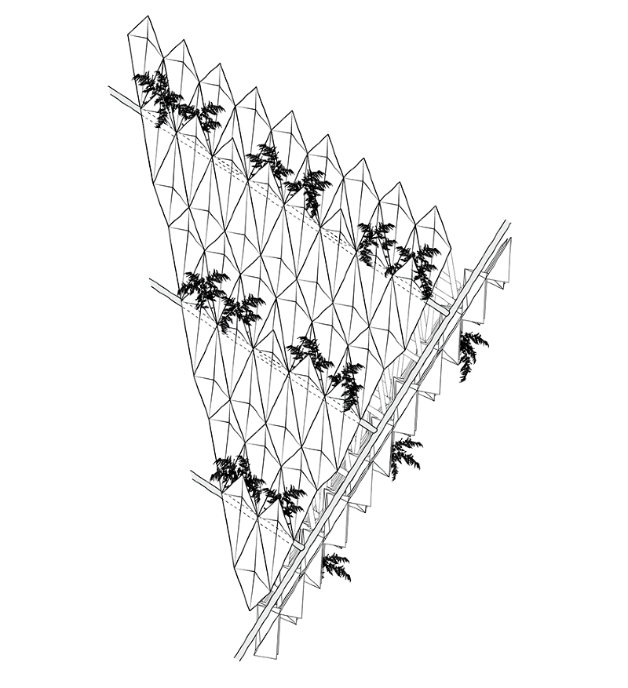
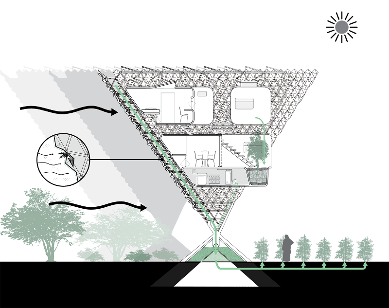
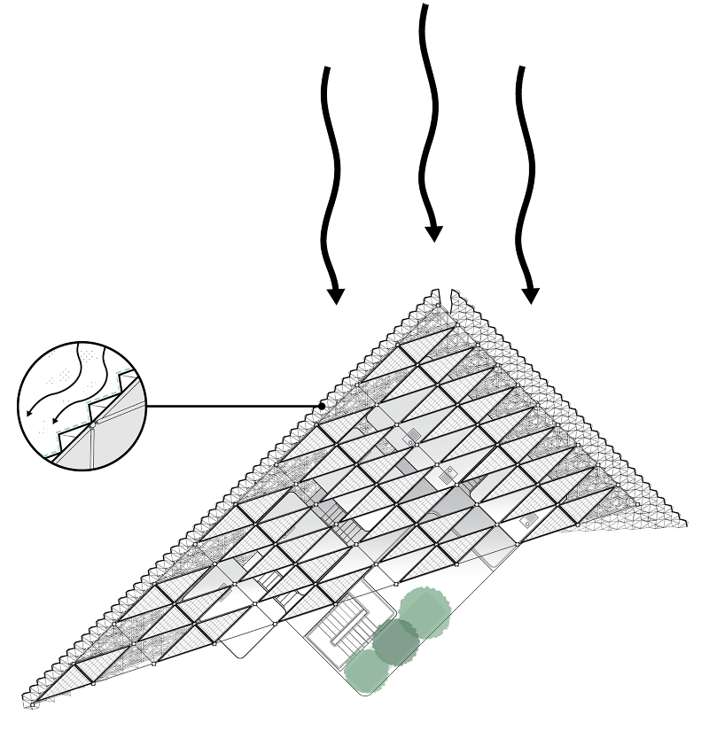
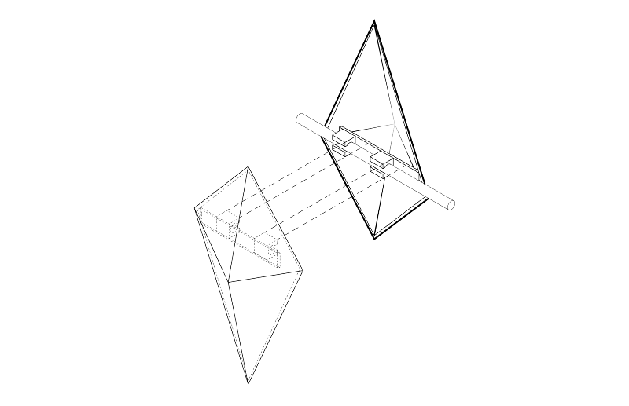
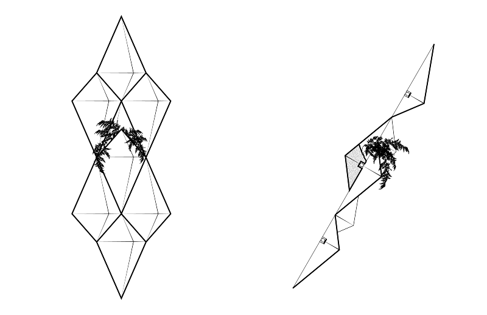
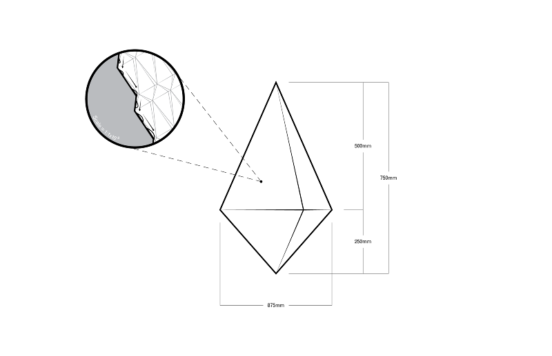
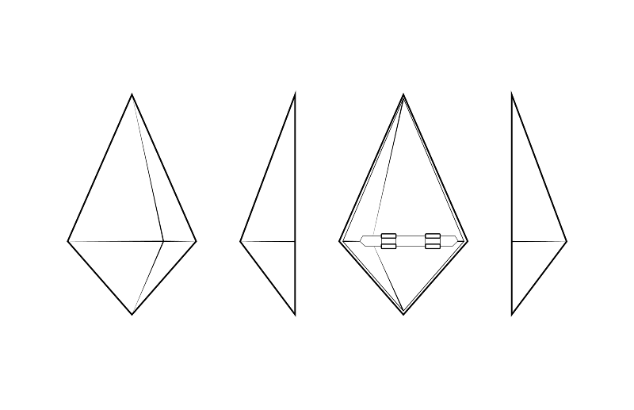
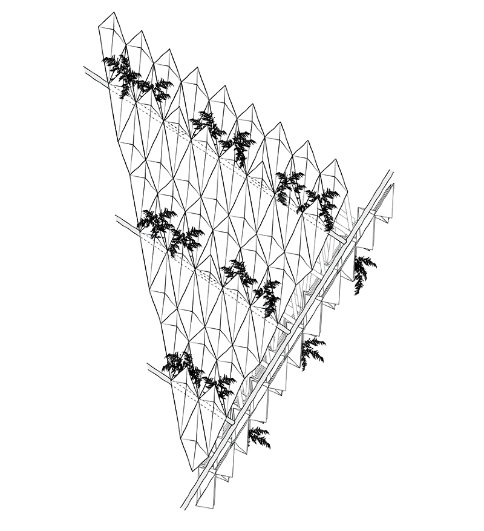
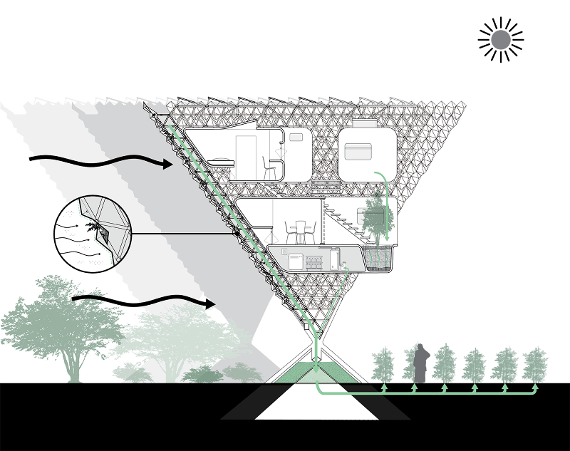
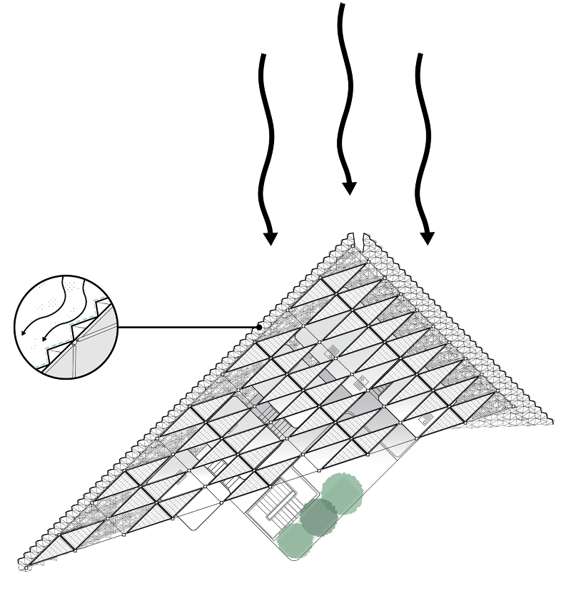
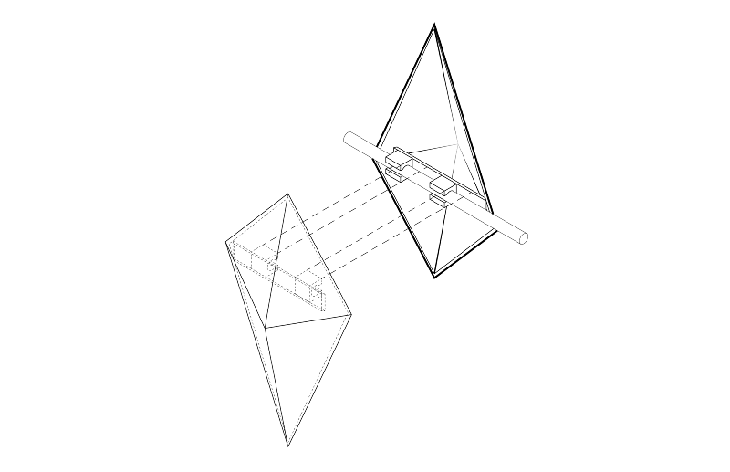
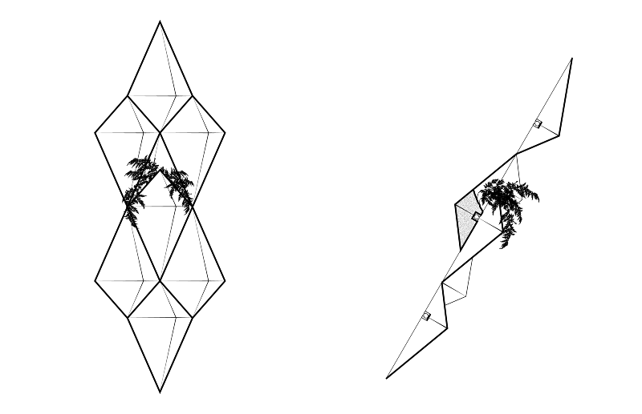
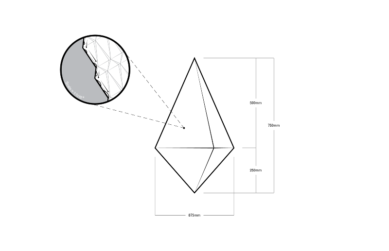
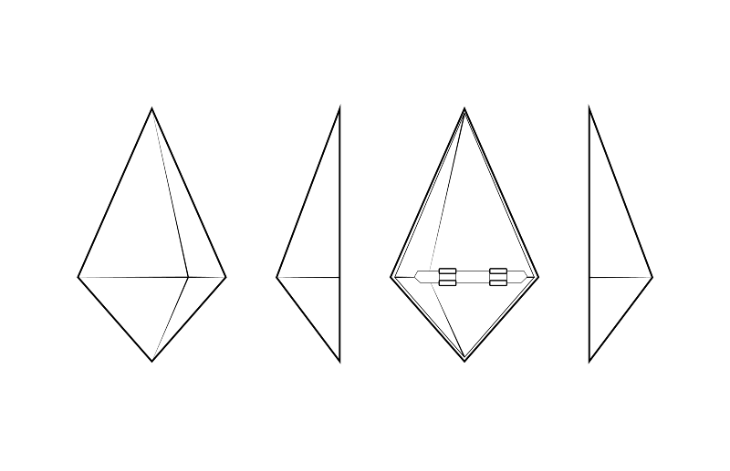
Linear Oasis
Future Cities
over,under / Carnegie Mellon University
with Rami el Samahy and Adam Himes
The Linear Oasis is a hybrid botanical-mechanical infrastructure that provides integrated solutions to the problems of desertification, resource scarcity, and urban sprawl at a regional scale. It simultaneously serves as a barrier to sandstorms, a self-sustaining source of water and food, and a limit to urban growth. After the construction of its most basic infrastructure, the Linear Oasis can passively collect water from the atmosphere, subsequently supporting local agriculture, live-work settlement, and transit infrastructure.
The Linear Oasis is reminiscent of fractal geometry, using similar forms at multiple scales for a variety of effects. Operating at its largest scale, it is a wall spanning the breadth of Qatar, built perpendicular to the prevailing winds to shield the majority of Qatar’s population from sandstorms. However, these northerly winds are also one of Qatar’s greatest climatic assets; thus, the wall must be porous enough to admit cool breezes, but solid enough to break the momentum of sandstorms bearing down on the urban east.
These winds present another opportunity: due to Qatar’s peninsular condition, breezes blow inland from the Gulf, carrying moisture with them. Mimicking the shell of the Namib Desert Beetle, the smallest components of the Linear Oasis system are intelligently shaped and nanotextured to collect this moisture from moving air. A surface of alternating hydrophobic and hydrophilic areas pulls moisture from the air at the nanoscopic level. This texture is echoed at the scale of a single building component, which when aggregated together form a surface of triangular facets oriented towards prevailing winds to optimize the water collection capabilities of the nanotexture. The orientation of the components is echoed in each of the building units that comprise the nationwide wall.
These units take the form of inverted triangular pyramids. The prow of each faces due north, presenting a long face to prevailing winds in the north-northwest and a shorter face to summer winds in the northeast. The orientation of each face serves to redirect the winds without diffusing them. The inversion of the pyramid presents a larger surface area of water-collecting components into stronger winds at high elevations, while weaker winds nearer to ground level are allowed to blow through the wall towards settlements.
Most water collected from wall components flows down the face of each pyramid towards a central water tank integrated into the base of each unit, though some is redirected to plants integrated into the façade to clean dust from the air as winds blow past. The water tank feeds into a drip irrigation system that supports small-scale agriculture along the southern face of the wall. These plots are tended by live-in farmers who reside in modular housing units installed in the space frame structure on the southern face of the pyramid units. If a pyramid unit does not support agriculture, the water it collects could service other settlements.
Residents of the Linear Oasis are linked to each other, and their produce to urban centers, via a light rail transit line that runs along the top of the wall from al Khor in the east to Dukhan in the west. Stations could be placed along the wall to spur future growth away from existing urban areas. The wall could even expand to the south to support more agriculture, a more intense form of settlement, or to respond to the wall meeting an existing urban center. Transit along the Linear Oasis has the potential to tie into the proposed Doha Metro and GCC Rail systems. The integration of these transit lines suggests a third line between Education City and Dukhan that would in turn delineate an ideal area for future urban growth that is well-serviced by transit, protected from sandstorms, and securely supplied with food and water.